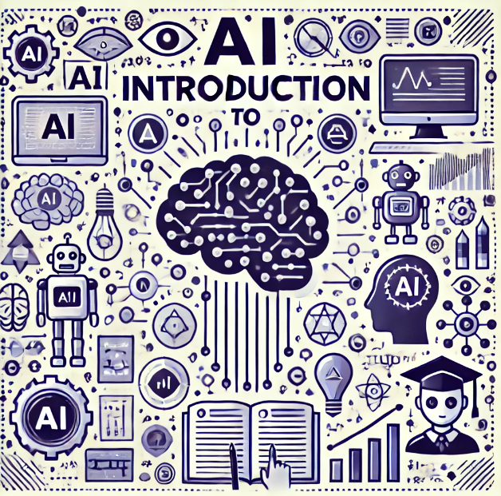

Introduction to AI
Get some insight into AI and its significance in today's day and age.
What is AI?
Artificial intelligence refers to the simulation of human intelligence in machines that are designed to think like humans and act like humans. This includes learning, reasoning, problem-solving, perception, and understanding natural language.
History of AI
Its history is so rich that it started almost 100 years ago. However, it was only in the mid-20th century that this modern field of AI arose through the use of computers. Key milestones include:
- 1956: Coined the term "Artificial Intelligence".
- 1960s: Built first programs and algorithms on AI.
- 1980s: Growth of expert systems.
- 2000s: Increase in machine learning and deep learning.
- 2022: ChatGPT was released to the public.
Types of AI
The three most general types of artificial intelligence are:
- Narrow AI: AI is the type that is built to perform a narrow task.
- General AI: This is the AI that can perform anything that a human can do.
- Superintelligent AI: This is the type of AI that is superior to any human being in intelligence.
Real-World Applications
AI is widely used in different sectors, but some of the crucial ones where it can be found are:
- Healthcare: AI for disease diagnosis and tailoring of treatment programs.
- Finance: AI for fraud detection and automated trading.
- Manufacturing: AI for predictive maintenance and quality control.
- Customer Service: AI for creating chatbots and virtual assistants.
Importance of AI
AI is transforming industries, fostering new opportunities, improving productivity, making better decisions, and developing innovative products and services.
Next Module